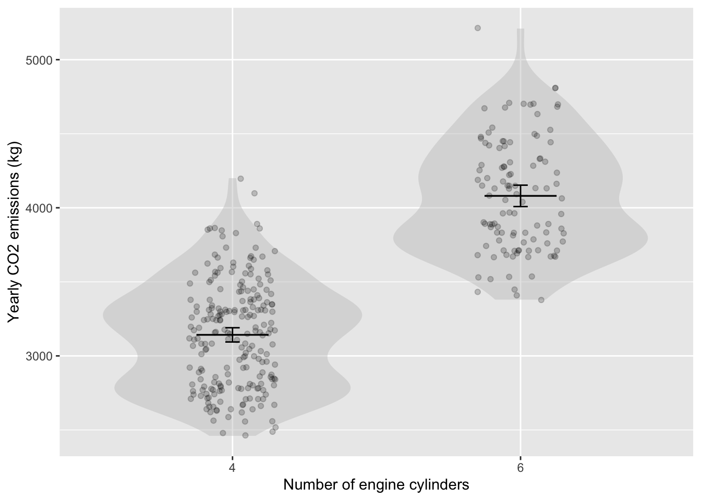
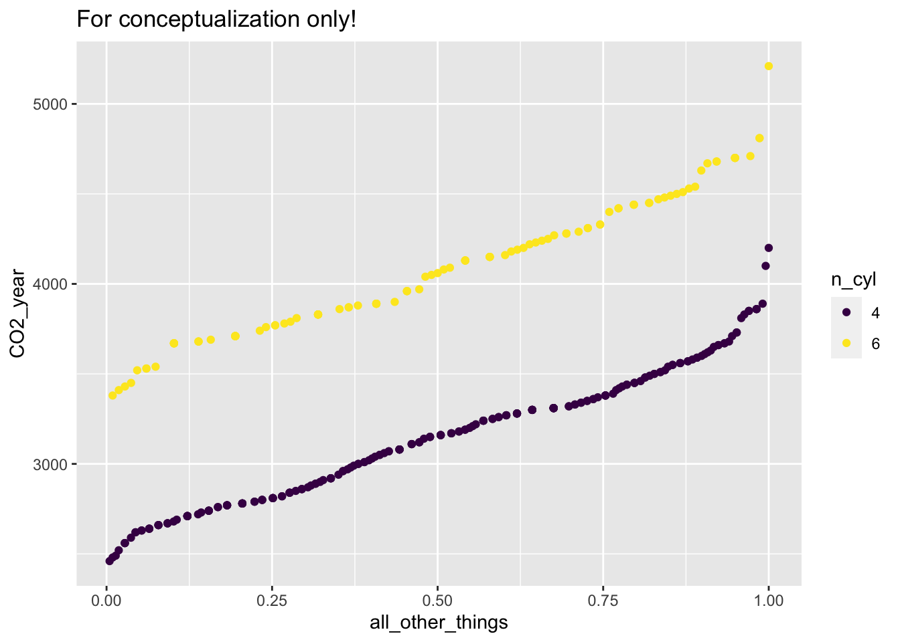
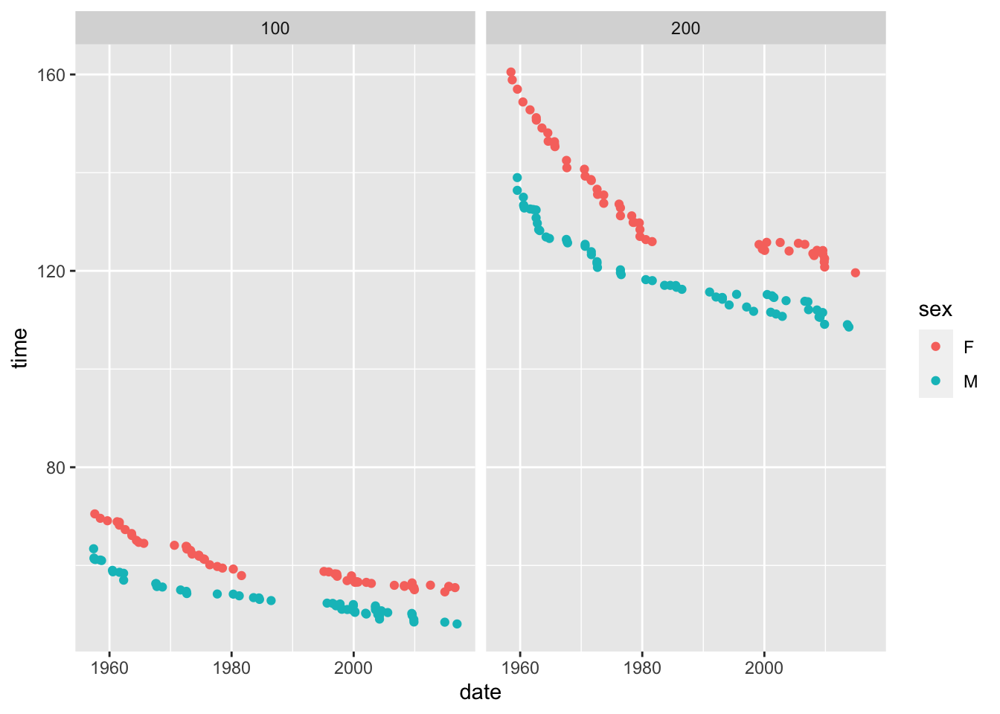
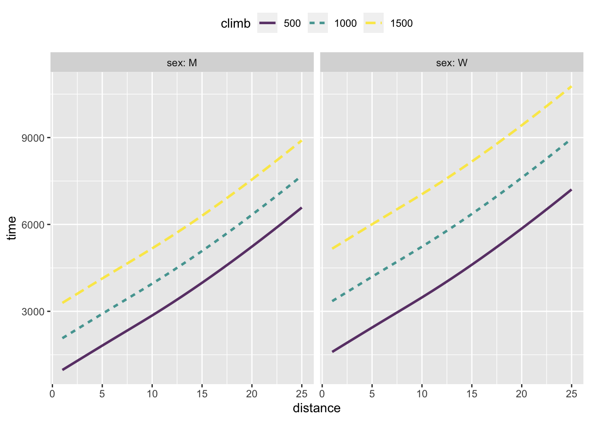
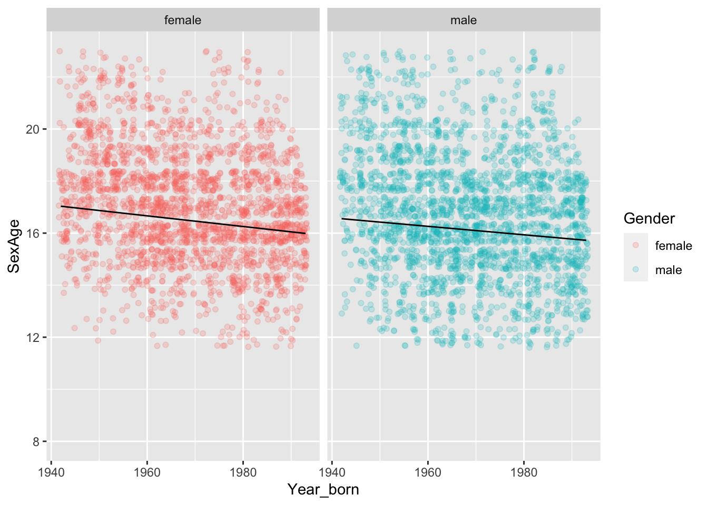

Learning Checks Lesson 24
24.1 Estimate an effect size from a regression model of one and two variables.
24.2 Construct a confidence interval on the effect size.
24.3. Gaming: Evaluate whether confidence interval indicates that estimated effect size is consistent with simulation.
24.1 (Objective 24.1)
What are the two settings for decision making that we cover in this course?
Give an example of each.
Solution
- Prediction and (2) Relationship
What will be the sales price of this house? “This house” is a shorthand way of saying “a house with these attributes.” The sales price will be the output of a prediction function that takes the various attributes as input and produces a sales price as output.
If I look for a house with an additional bathroom, how much will that change the sales price? This asks for the relationship between number of bathrooms and sales price.
24.2 (Objective 24.1)
For each of these research questions, say whether it is a prediction setting or a relationship setting.
- What’s the risk of falling ill?
- How will the risk of falling ill change if we eat more broccholi?
- Is there any reason to believe, based on the evidence at hand, that we should look more deeply into the possible benefits of broccholi?
Solution
- Prediction
- Relationship
- Relationship
SOME IDEAS FOR EXERCISE MODES
Use
mod_plot()and look at the slope of lines and offsets. Compare to the model coefficients.Generate data from a DAG and look at the confidence interval on the effect size. Then make new samples and see if the effect size in those samples is consistent with the confidence interval.
In text, maybe look at the confidence intervals across new samples and show that they tend to overlap. Only a few of them don’t touch a common line. This is basically just a review of confidence intervals, but why not?
Interaction. Show that when there is an interaction term, the effect size (as calculated by
mod_effect()) is not constant, as it is for models with purely linear terms.
LC 24.1
The Computational Probability and Statistics text describes an early study on human-to-human heart transplantation:
“The Stanford University Heart Transplant Study was conducted to determine whether an experimental heart transplant program increased lifespan. Each patient entering the program was designated an official heart transplant candidate, meaning that he was gravely ill and would most likely benefit from a new heart. Some patients got a transplant and some did not. The variable indicates which group the patients were in; patients in the treatment group got a transplant and those in the control group did not. [[Not in data set: Another variable called [MISSING] was used to indicate whether or not the patient was alive at the end of the study.]]”
The data frame is called Transplants. [NEED TO MOVE TO PACKAGE]
You’re going to build a model of outcome vs group based on the data in Transplants. The outcome variable has levels "Dead" and "Alive", that is, it is a two-level categorical variable. Consequently, the model output will be the probability that the transplant candidate was alive at the end of the study.
- Build a model
outcome == "Alive" ~ groupfrom theTransplantsdata. Pay close attention to the left-hand side of the tilde expression: it is a calculation that produces a 1 ifoutcomeis"Alive"and zero otherwise. Notice the double equal signs and the quotes around"Alive".
mod <- lm(outcome == "Alive" ~ group, data = Transplants)The sole explanatory variable here,
groupalso is categorical. It has levels"Control"and"Treatment".- Using
eval_mod(), find the probability of being alive at the end of the study for the Control group and for the treatment group. - The two probabilities in (ii) do not add up to zero. Explain why.
- Using
mod_eval(mod, group="Treatment") group model_output
1 Treatment 0.3478261mod_eval(mod, group="Control") group model_output
1 Control 0.1176471Find the effect size of the treatment. All you need is your results from (2)?
Use
mod_effect(modelname, ~ group)to calculate the effect size.- Is the result consistent with what you found in (3).
- Explain in everyday language what this effect size means.
mod_effect(mod, ~ group) change group to_group
1 -0.230179 Treatment Control24.2
Effect sizes generally come with units and you have to take into account the units in order to know if the effect is important or not.
Move the Loans data into the math300 package. But for now …
Loans <- readr::read_csv("data/loans.csv")A case in point is provided by the Loans data frame, which records dozens of variables on each of 10,000 loans made through the Lending Club. The interest rate at which the loans are made varies substantially from loan to loan. Presumably, higher interest rates reflect a higher perception of risk of default (which would lead to the lender losing his or her money).
Here’s a model of the interest rate. (This is for the borrowers who have a low debt-to-income percent; we won’t worry about the few very high debt-to-income cases.) We’re only interested in this problem with the effect size, which is the same as the coefficients on the model.
mod <- lm(interest_rate ~ homeownership + debt_to_income +
account_never_delinq_percent + verified_income,
data = Loans %>% filter(debt_to_income<50))
mod %>% confint() 2.5 % 97.5 %
(Intercept) 15.31467948 17.26502804
homeownershipOWN 0.16056412 0.73009641
homeownershipRENT 1.01571903 1.41695574
debt_to_income 0.09565833 0.11523598
account_never_delinq_percent -0.09149666 -0.07122369
verified_incomeSource Verified 1.37798985 1.79909554
verified_incomeVerified 2.88724295 3.39001806There are two quantitative explanatory variables—debt_to_income and account_never_delinq_percent—both of which are measured in percent.
There are two categorical explanatory variables: homeownership and verified_income. The levels for homeownership are “MORTGAGE” (meaning money is still owed on the house), “OWN” (without a mortgage), and “RENT” (meaning the borrower rents rather than owning a home). The levels for verified_income are “Not Verified”, “Verified”, “Source Verified”.
For the categorical explanatory variables (and the intercept) the effect-size units are “percent interest.” For the quantitative explanatory variables, the effect-size units are “percent interest per percent,” so that when multiplied by the debt_to_income percent or the account_never_delinq_percent the result will be in “percent interest.”
- According to the model, who pays the higher interest rate (on average): people who OWN their home, people who RENT, or people who have a mortgage on their home? How much higher than the lowest-interest rate category.
People who rent pay the highest interest rate, a little more than 1 percentage point higher than people who have mortgages. It’s interesting that people who own their homes outright pay (on average) pay about 0.45 percentage points more than people who own outright. This might be because having a mortgage means you also have a credit history.
- According to the model, who pays the higher interest rate (on average): people whose income is “not verified,” people whose income is “verified,” or people who have the source of income verified (level: “source verified”)?
People whose income is verified pay about 3 percentage points higher interest than people whose income is “not verified.” This seems surprising, but it may be that people who have higher perceived default risk are also the people who are asked to verify their income. Things get complicated when explanatory variables are linked to each other.
- The coefficients on
debt_to_incomeandaccount_never_delinq_percentare the smallest numerically. Does this mean that the effects ofdebt_to_incomeandaccount_never_delinq_percentare smaller than the other two explanatory variables in the model? Explain why or why not. (Hint: Look at the distribution ofdebt_to_incomeandaccount_never_delinq_percentto get an idea for the range of values these variables take on.)
Solution
debt_to_income varies over about 25 percentage points. The variation in account_never_delinq_percent is about the same, varying from about 80 to 100 percentage points. The effect of the variables (in percent interest) is determined by multiplying the coefficients by the amount of variation in the variables. So, from one extreme to the other, the effect of debt_to_income is about 2 perentage points of interest, and roughly the same for debt_to_income.
24.4
The logic of effect size is to investigate the change in output of a model when one input variable is changed, holding all other things constant. This problem is about the extent to which we mean “all”.
The figure shows yearly CO2 production of individual gasoline-fueled passenger vehicles stratified by the number of engine 4 or 6 cylinders.

- The effect size is the difference between the output variable when a change is made to an input. Consider the effect size of changing from a six-cylinder engine to a four-cylinder engine. Here’s a subtly incorrect way of calculating something like an effect size: Pick a dot from the six-cylinder group and another dot from the four-cylinder group. Subtract the 4-cylinder point’s CO2 value from the six-cylinder point’s CO2 value, and divide by the change in the input, that is, -2 cylinders.
- Follow this procedure for the top-most dot in each cloud and calculate the effect size. -A- (5100 kg - 4100 kg) / (-2 cylinders) = -500 kg/cylinder.
- Follow the procedure for the bottom-most dot in each cloud and calculate the effect size. -A- (3400 kg - 2500 kg) / (-2 cylinders) = -450 kg/cylinder.
- Follow the procedure for the bottom-most dot in the four-cylinder cloud and the top-most dot in the six-cylinder cloud. -A- (5100 kg - 3400 kg) / (-2 cylinders) = -850 kg/cylinder.
- Do the same as in (c) but use the bottom-most six-cylinder dot and the top-most four-cylinder dot. -A- (3400 kg - 4100 kg) / (-2 cylinders) = +350 kg/cylinder. In other words, switching from the six
- You can imagine the (tedious) process of repeating the calculation for every possible pair of dots and getting a distribution of effect sizes. What would be the range of this distribution: from the smallest effect size to the biggest? (Hint: You can figure it out from your answers to (1).) -A- -850 kg/cylinder to +350 kg/cylinder
From your result in (2), you might be tempted to conclude that the effect size is highly uncertain: it might be negative or it might be positive. But there is a problem, the procedure used in (1) and (2) fails to incorporate the notion of all other things being equal. This notion applies not just to known variables, but to all the other unknown factors that shape the data.
For the purpose of envisioning the concept, imagine that we actually had a measurement of all the factors that shaped CO2 emissions from a vehicle. We’ll call this imaginary measurement “all other things”. The figure below shows a conceptualization of what CO2 emissions as a function of the number of cylinders and “all other things” would look like.

- Using the graph of CO2_year versus “all other things”, calculate the effect size of a change from six to four cylinders. Remember to hold “all other things” constant in your calculations. So do the effect size calculation at each of several values of “all other things”. What is the effect size and about how much does it vary from one value of “all other things” to another? -A- At “all other things being 0.25, the CO2 emissions for the 6- and 4-cylinder cars is 2800 kg and 3800 kg. The effect size is therefore (3800 kg - 2800 kg) / -2 cylinders = -500 kg/cylinder. The value of the effect size for other levels of”all other things” will be about the same, since the position of the six-cylinder dots is more-or-less constant compared to the corresponding four-cylinder dot.
This exercise is intended to give you a way of thinking about effect size and “all other things”. In reality, of course, we do not have a way to measure “all other things”. Instead, we calculate the effect size not directly from the data but from the model output (indicated by the statistic layer in the first graphic). As we saw in Lesson 22, there is actually some uncertainty about the model output stemming from sampling variability that can be summarized by a “confidence interval”. For the relationship between the number of cylinders and CO2 emissions, the extent of that uncertainty is indicated by the interval layer in the first graphic. A fair depiction for the corresponding uncertainty in the effect size can be had by repeating the process of (2), but only for points falling into the confidence interval.
Note to readers who know something about car engines: As you know, switching out a six-cylinder engine for a four-cylinder engine is likely to change many other things: the weight of the vehicle, the displacement of the engine, the power available, etc. So it’s not useful to insist that everything other than the number of cylinders be held constant. Instead, we’ll be looking at the effect of that whole constellation of changes associated with a change in the number of cylinders.
24.X
In very simple settings, you don’t need access to the original data: a simple summary will do.
Use the data/bloodthinner.csv data from CPS chapter 19. Create the table of counts and calculate the effect size/probabilities from that.
24.Z
The National Cancer Institute publishes an online, interactive “Breast Cancer Risk Assessment Tool”, also called the “Gail model.” The output of the model is a probability that the woman whose characteristics are used as input will develop breast cancer in the next five years. The inputs include:
- age
- race/ethnicity
- age at first menstrual period
- age at birth of first child (if any)
- how many of the woman’s close relatives (mother, sisters, or children) have had breast cancer
As a baseline, consider a 55-year-old, African-American woman who has never had a breast biopsy or any history of breast cancer, who doesn’t know her BRCA status, and whose close relatives have no history of breast cancer, whose first menstrual period was at age 13 and first child at age 23. No “subrace” or “place of birth” is specified.
Follow the link above to the cancer risk assessment tool, and enter the baseline values into the assessment tool using the link above. According to the assessment tool, what is the probability (“risk”) of developing breast cancer in the next five years? What is the lifetime risk of developing breast cancer? -A- 1.4% risk in the next five years, 7.8% lifetime risk.
What is the effect size on our baseline subject of finding out that:
one of her close relatives has developed breast cancer? -A- Using the baseline values for the inputs, but changing the number of close relatives who have developed breast cancer to 1, the new five year risk is 2.2% and the lifetime risk is 12.3%. This is a change of five year risk of 0.8 percentage points and 4.5 percentage points for lifetime risk. (In Lesson 33, you’ll see that expressing effect size of a probability is often done using “log-odds”.)
more than one of her close relatives have developed breast cancer? -A- This has a dramatic effect, with five-year risk increasing to 4.8 percentage points and lifetime risk increasing to 29.4%.
What is the effect size associated with comparing the baseline conditions to a woman with the same conditions but a race of white? -A- Five year risk goes down by 0.3 percentage points, lifetime risk goes down by 0.4 percentage points.
What is the effect size of age? Compare the baseline 55-year old woman to herself when she is 65, without the other inputs changing. Since age is quantitative, Report the effect size as percentage-points-per-year. -A- Five year risk goes up to 1.5%, an increase of 0.1 percentage points per year. Lifetime risk goes down to 5.6%, a rate of -0.67 percentage points per year.
Possibly Stat2Data::ArcheryData and ask about effect size.
24.ZZ
The graphs shows world record times in the 100m and 200m butterfly swim race as a function of year, sex, and race length. (Data frame: math300::Butterfly)


In 1980, what is the effect size of race distance? (Make sure to give the units.)
In 1980, what is the effect size of sex? (Make sure to give the units.)
In 2000, what is the effect size of race distance? (Be sure to give the units.)
24WW
Figure 1 shows a model of the running time of winners of Scottish hill races as a function of climb, distance, and sex.

Using as a baseline a distance of 10 km, a climb of 500m, and sex female, calculate each of these effect sizes. Remember for quantitative inputs to format the effect size as a rate, for instance seconds-per-meter-of-climb.
The effect size of climb. Consider an increase of climb by 500m. - For females running a 10 km course, an increase in climb from 500m (the specified baseline for comparison) to 1000m is roughly 2000 seconds. Since climb is quantitative, this should be reported as a rate, the change of output (2000 s) divided by the change in input (500 m). This comes to 4 seconds per meter of climb.
The effect size of distance. Consider an increase in distance of 10 km. -A- The model output at baseline is about 3500 seconds. The model output for a distance of 20 km (an additional 10 km above baseline) is about 6000 s. The effect size is a rate: (6000 - 3500) s / 10 km, or 250 s/km. For comparison, the fastest 20 km road run by a woman (at the time this is being written) is 1 hour 1 minute 25 seconds, that is, 3685 seconds. This amounts to an average of about 180 s/km. A walker would cover 1 km in about 720 seconds. So the racers are quite fast.
Is there any evidence of an interaction between sex and climb? -A- Yes. Note that the lines for different climb amounts are vertically spaced more widely for females than for males. This means that the effect size of climb differs between the sexes. That’s an interaction between climb and sex.
24.R
Over the past hundred years, attitudes toward sex have changed. Let’s examine one way that this change might show up in data: the age at which people first had sex. The National Health and Nutrition Evaluation Survey includes a question about the age at which a person first had sex. For the moment, let’s focus just on that subset of people who have had sex at least once.

What is the effect size of year born on age at first sex? Use units of years-over-years. -A- The model output is 17 years for those born round about 1940, and slightly more than 16 years for those born around 1990. The effect size is therefore about negative 1 year per 50 years
Is there evidence for an interaction between gender and year born? -A- No, the slopes of the lines are essentially identical for males and females.
Translate the effect size in (1) to the units weeks-over-years. -A- 1 year per 50 years is the same as 52 weeks per 50 years, or about one week per year.